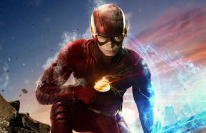
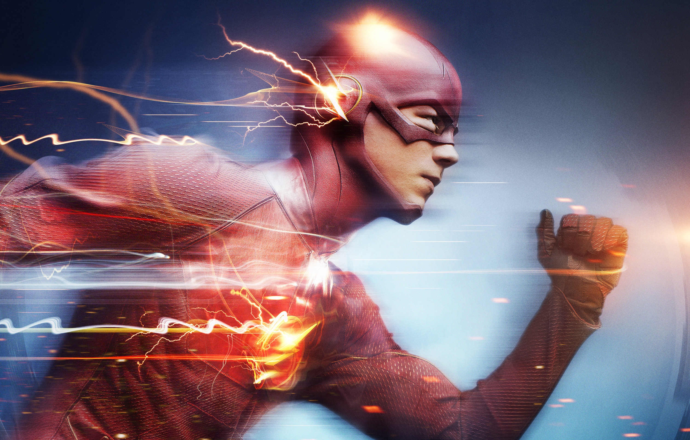

闪电侠
闪电侠（Flash）是美国DC漫画旗下超级英雄，初次登场于《闪电侠》创刊号（1940年1月），在DC漫画史中曾有多位角色曾使用过闪电侠这一称号。一般被人熟知的闪电侠是在1956年10月《展示橱》第四期中登场的巴里·艾伦。和在1986年接过闪电侠衣钵的沃利·韦斯特（白沃利），重启前他们分别担任《闪电侠》主角长达20年（虽然新52的剧情显示。dc主世界（地球0）只有巴里·艾伦一人担任过闪电侠，但《重生》事件中沃利·韦斯特（白沃利）作为闪电侠回归）
